개발 진행 단계 통합 리포트
남촌 물상론 기반 사주 자기이해 서비스(글로벌 K컬처 유입 · 영어 우선 · 웹 전용 · $8 단건)의 프론트엔드 디자인 전 과정. 다크 3방향 → 밝은 물성 전환 → Swiss 확정 → 고도화까지 4회 사이클 · 3-리뷰어 게이트 2회 · 워커 10기 오케스트레이션 기록.
진행 타임라인
SSOT 아카이브 구축 + 다크 3방향 확정 (v0.1)
핀터레스트·트렌드 사이트 조사 291 에셋 판정 태그 아카이빙. Stitch 3방향 비교에서 A+C "Nocturne Obang"(87점) 확정 — 이후 09-05 가드레일 회의로 밝은 방향 전환.
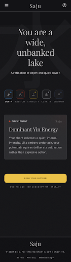
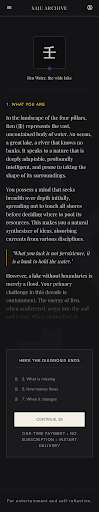
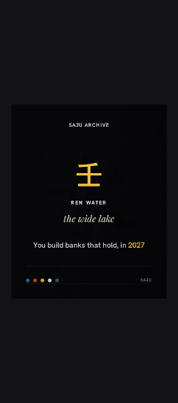
A+C Nocturne Obang 세트 (다크 · 이력 보존) — flows/AC/
콘셉트 가드레일 — 밝은 모던 K-컬처 물성으로 전환 (v0.2)
09-05 회의 3건: (1) 오행 비주얼의 점성학 톤 분리 · 물성의 스틸컷 원칙 (2) 일간 정체성 카드 = 1번 자산 · 관계는 핵심 패턴 3-5장면만 (3) 52만 조합 → 12-18 유형 압축 노출. 다크 v0.2 폐기. 상세: concept-guardrail.md
오케스트레이션 R1 — 사용성·톤·i18n 워커 3기
UX 검증(질문 18·리스크 12) · 톤 정합(팔레트 정당화·EYEBROW 지도) · i18n 구축(31/31 실측). 3-리뷰어 게이트: 악마 비판 19건(치명 6) · CTO 해결 41건 · 머지조건 G1-G8 확정.
R2 재배정 — 배지명 10종 · EN 카피덱 · 재접근·공유카드 설계
astrobazi 충돌 회피 배지명 10종(Heartwood · Ivy Thread · Noon Mark · Moon Phase · Granite Ridge · Garden Soil · Cast Iron · Silver Foil · Mountain Stream · Mirror Lake) · 매직링크 영수증 설계 · 컷블록 EN/KR.
Swiss Data-Editorial — 확정 고도화 세트
Swiss Data-Editorial 확정 + 6화면 고도화 (FIG. 02-07)
스타일 5방향 경쟁에서 Swiss 92점 최고 평가. 순백+먹+시그널 레드 · FIG. 도판 넘버링 · REGISTRY 문법 · tabular numbers. "판정은 코드가 확정하고 근거를 표기한다"는 제품 철학의 시각화. 카피덱 v2 문장 직접 주입 · em-dash 0 · 점술 어휘 0.
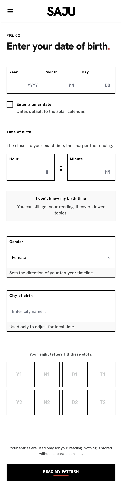
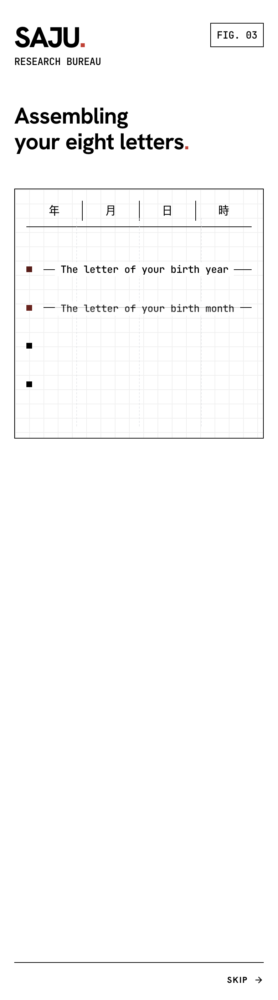
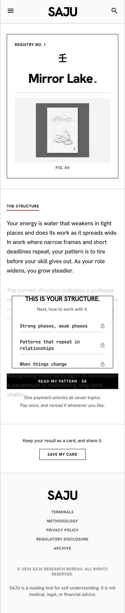
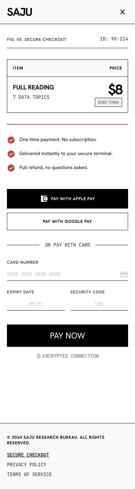
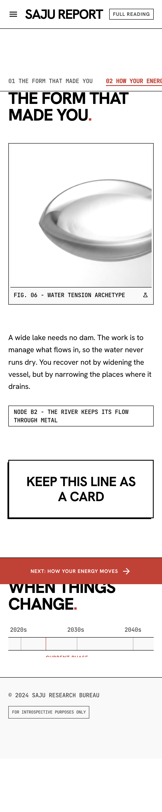
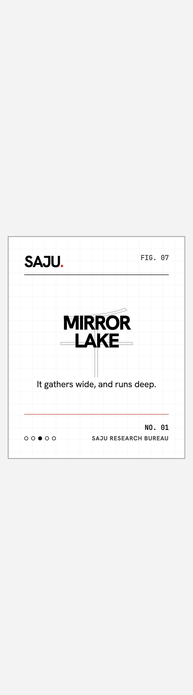
FIG. 02 입력(성별·분 필드 추가) · FIG. 03 결정론 조립 · FIG. 04 컷 블록 · FIG. 05 영수증(Apple 로고 해소) · FIG. 06 대운 타임라인 · FIG. 07 공유 카드 — flows-swiss/ (780px)
스타일 5방향 비교
동일 카피덱 · 5개 시각 언어 경쟁. 상세 대화형 비교: review-styles-5.html


Swiss 92(권장) · Gallery 84 · Pastel 82 · Brutalist 80 · Muji 78 — 판정 근거는 비교 페이지 하단 표
Swiss 변형 5종 · EN/KO 쌍
Swiss 문법 안 단계적 변형: Dense Data · Airy Gallery · Red Signal Bold · Soft Warm · Mono Ledger. 각 변형 한국어본 나란히 검증 — keep-all 전부 적용, 가독성 실측(readability-ko-v2.json): Dense 16px·1.80 / Warm 16px·1.80 통과, Ledger·RedBold 1.56 수용, Airy 14px 미달(조건부).


좌부터 Dense · Airy · RedBold · Warm · Ledger (KO) — 개별 EN본은 swiss-variants/ 참조
V1 다크 아카이브 (이력)
Nocturne Obang 확정 시절 21장. 방향 전환으로 아카이브 — 배지 문법·컷 블록·대운 타임라인 등 구조 자산은 Swiss 세트로 승계됨.
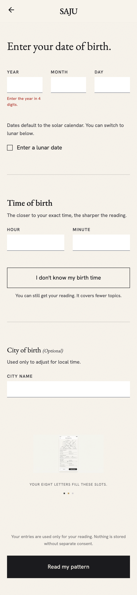
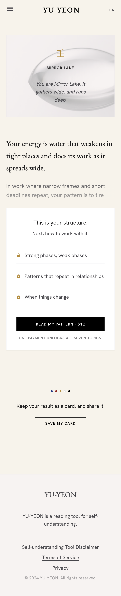

flows/AC/ — 21스크린 전체 보존
게이트 기록 (2회)
| 게이트 | 1차 (R1 산출) | 2차 (R3-R4 산출) |
|---|---|---|
| 머지마스터 | i18n·UX merge / tone fixes · DESIGN.md 이중 정의 지적 | 3브랜치 전수 대조 · merge 순서 권고 · 누락 조각 12건 |
| 악마적 비판 | 공격 19건 (치명 6): 대운 계산 불능 구조 · EN 덱 부재 · ru-RU 제재 · 대비 수치 오류 | — (CTO 재심으로 흡수) |
| CTO 해결사 | 해결 41건 · fix-now 19 · 머지조건 G1-G8 | 악마 19건 재심: 해소 6 · 승계 9 · 증감 4 (T-07 승격 · T-13~15 신규) |
산출: gate-merge-master.md · gate-devil-advocate.md · gate-cto-solutions.md · 티켓 SSOT: tickets-index.md (T-01~T-12)
결정 대기 (사용자)
Q1 · 사이트+앱 vs 웹 전용
SSOT은 웹 전용(앱스토어 회피, 수수료 3-7%)이나 최근 태스크명에 '앱' 포함. PWA/네이티브 확정 시 입력·결제·푸시 설계 추가. → grill 문서 Q1
Q5 · 로케일 전략
10개 로케일 동시 vs EN+KR 선행 후 순차(CTO 권장). 조판 자산(typo-multilang)은 이미 10-로케일 완비 — 순차 오픈이어도 즉시 대응 가능. → T-12
{{BRAND}} 확정
데드라인 도래로 SajuRoot 기본 채택(임정). 확정 시 {{BRAND}} 치환 + 워드마크 밴드 디자인 + 도메인 4종 등록. → T-05 · product-decisions.md